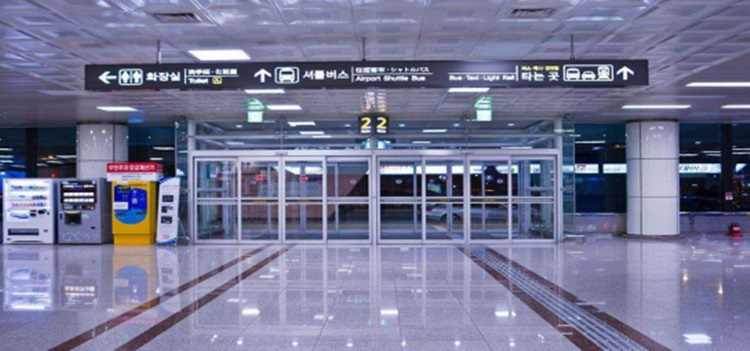

从空路到达
#金海国际机场#
金海国际机场分为国内航线和国际航线2座航站楼，因此有2处咨询处。釜山金海机场为韩国南部空中枢纽，在金海国际机场有从首尔，江陵，光州，济州，木浦，原州等地的6个国内线和去往日本，中国，曼谷，塞班等7个国家的10个城市的国际线。

图：釜山金海机场
韩国旅游发展局在国际航班厅舍的1 层2、3 号门之间处设立了旅游咨询处，提供有关釜山旅游的英语、日语、中文的宣传手册，根据机场航班的运行时间运营，年中无休（工作时间：09：00 a.m. — 06：00 p.m.）
国际航班咨询中心
位置：1、2 层2、3 号门之间
咨询电话：1 层： 051-974-3772、2 层： 051-974-3773
外语服务：英语、日语、中文、泰语，中文咨询处在1 层。
营业时间：1 层： 7：00 — 22：00， 2 层： 06：30 –21：00
地址：釜山江西区大渚2洞2350
官方网站： http://www.airport.co.kr
#从机场到达市区#
金海国际机场到釜山市区可以乘坐机场大巴、釜山—金海轻轨、出租车及市区巴士这四种交通方式。
1、在机场乘坐釜山 – 金海轻轨，再换乘地铁 2 号线便可到达釜山市内的西面以及海云台。
2、BUS 机场大巴：机场大厅3号GATE出去，找到2路公车站牌。共有3条线，1、2号线海云台方向，海云台的所有旅馆都设置了站点。3号线是釜山火车站和南浦洞方向。
价格：1、2号线成人7000韩币，6到12岁儿童4500韩元。不到6岁的儿童免费。3号线成人6000，儿童4000。每25分钟一趟车哦。
3、高铁：从机场出来门口就是高铁的“机场站”售票机有中文菜单，选择沙上站。可以在沙上站换乘地铁2号线。地铁2号线可以到海云台，釜山火车站，南浦洞，也可以在西面站换乘1号线。
4、出租车：出租车的费用虽然比大巴稍微贵一点，但是对于初来韩国的旅客是最佳的选择，无需担心听不懂站名，出租车会将你安全送到目的地，也无需担心赶不上大巴或地铁的时间，时间均由你自己掌控。釜山的出租车分为普通出租车和模范出租车及能乘坐9人的大型出租车（与模范出租车起步价一样）。
从水路到达
旅客码头起着釜山海上旅行的中枢作用，远则可以到济州岛等南海主要旅游地享受海上旅行，近则可以乘坐游轮游览海云台和太宗台。

图：轮船示意图
国内航线：主要往返于首尔、济州岛以及釜山周边一些城市，由首尔开往釜山约需1小时。由济州开往釜山约需40 分钟。来往于济州的航线周日停航。费用根据淡旺季也会变动。
咨询电话： 82-51-660011
国际航线：国际旅客码头拥有开往日本下关的釜关渡轮的“Hamayuu”号和“星希”号，开往福冈的“New camellia”号和“Beatle”号等游轮。国内上海、天津、青岛等城市也有开往釜山的游轮，有的旅游线路还会包含济州或者日本某些城市。
咨询电话： 82-51 465-3471
地址：釜山影岛区东三洞
从陆路到达
#KTX#
目前，KTX 高速列车有4 条路线，乘车站随路线不同，需要仔细确认。从首尔火车站到达釜山火车站的京釜线途经大田、东大邱、新庆州、蔚山等地，用时约2.5 小时，非常方便快捷。
营业时间：工作日09：00 ～ 18：00，周六09：00 ～ 13：00
订票网站：http://www.korail.com/
地址：釜山东区草梁洞
图：韩国KTX
#长途大巴#
从首尔高速巴士客运站（고속버스터미널）乘坐长途大巴到釜山综合巴士客运站（부산종합버스터미널）。全程大约需要4小时15分钟，23000韩币。
地址：釜山金井区老圃洞 133，地铁1号线老圃站下3号出口出来即可看到。
附注：
1、釜山有KTX、新村号、无穷花号等3种火车。车速最快的是KTX，其次是新村号。新村号提供无线公用电话、餐车等高档服务。无穷花号是最适合游客乘坐的火车，其路线连接许多城市。（周二、周三、周四车票优惠15%，但法定公休日除外）
2、ktx有一种3日通票或者5日通票，购买之后，外国乘客不受旅行区间或次数的限制，可以自由利用。